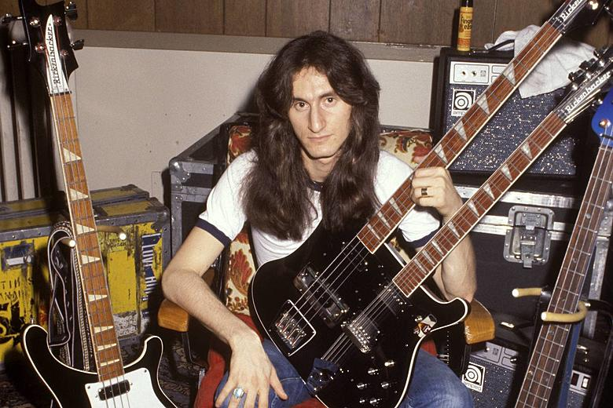
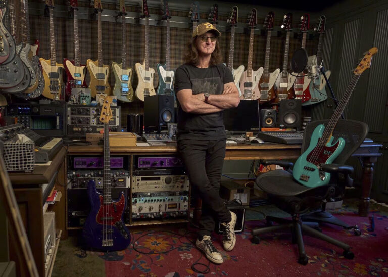

Geddy Lee, born Gary Lee Weinrib on July 29th, 1953 is Rush’s iconic bassist, vocalist, and keyboardist. Geddy is renowned for his virtuosic playing, soaring vocals, and signature synth work. A key force behind Rush’s evolving sound, he helped shape progressive rock with complex basslines and thought-provoking lyrics. Despite global fame, Lee remained humble and deeply connected to Rush’s loyal fanbase. Fans admired not just his musical genius but also his passion for history, baseball, and storytelling. His 2023 memoir, My Effin’ Life, gave fans an intimate look at his journey. Even after Rush’s retirement, Geddy Lee’s legacy thrives, proving that his influence on rock and his bond with fans are truly timeless.